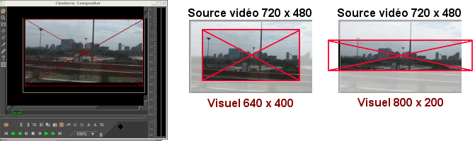
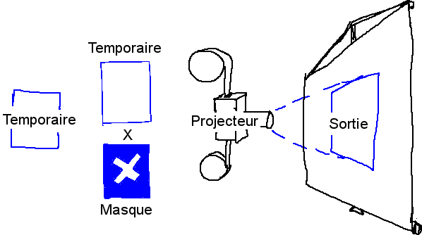
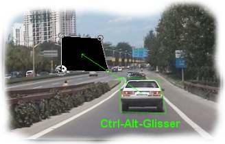
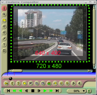
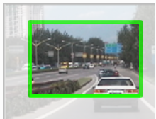

menu de zoom et une
menu de zoom et une
 lampe-témoin.
lampe-témoin.
| [ << ] | [ >> ] | [Top] | [Table des matières] | [Index] | [ ? ] |
Cette fenêtre affiche la sortie de la timeline. C'est l'interface de la plupart des opérations de composition ou des opérations qui affectent l'aspect de la sortie de la timeline. Les opérations effectuées dans le Compositeur affectent la timeline mais n'affectent pas les clips.
La sortie vidéo possède plusieurs fonctions de navigation. La taille de la sortie vidéo est soit verrouillée à la taille de la fenêtre ou libérée à l'aide des barres de défilement pour la navigation. On peut effectuer des zooms et des panoramiques dans la sortie vidéo. Naviguer dans la sortie vidéo de cette manière n'affecte pas la sortie rendue, cela ne modifie que la vue dans la fenêtre du compositeur.
Si le point de vue n'est pas verrouillé à la taille de la fenêtre, un clic avec le bouton central et un glisser n'importe où dans la vidéo permettent d'effectuer un panoramique.
Presser les touches + et - permet de zoomer ou de dézoomer la sortie vidéo.
Une copie de la plupart des fonctions disponibles dans la fenêtre principale se
trouve sous l'affichage vidéo. Il y a, de plus, un
menu de zoom et une
lampe-témoin.
Le menu de zoom permet d'obtenir tous les facteurs d'agrandissement disponibles et, à l'aide de l'option Auto, d'adapter la taille de la vidéo à la taille de la fenêtre. Le menu de zoom n'affecte pas la taille de la fenêtre.
La lampe témoin s'allume en rouge lorsqu'une opération de rendu est en cours. C'est utile pour savoir si la vidéo affichée est à jour.
Un clic droit n'importe où dans la vidéo affiche un menu avec les facteurs de zoom et d'autres options. Dans ce cas particulier, les facteurs de zoom redimensionnent l'ensemble de la fenêtre et non pas la vidéo uniquement.
Les options Réinitialiser la caméra et Réinitialiser le projecteur recentrent la caméra et le projecteur. Voir la section La composition.
L'option Cacher les commandes cache tout sauf la vidéo.
Sur la gauche de la sortie vidéo se trouve une barre d'outils spécifique à la fenêtre du compositeur. Voici les fonctions de cette barre d'outils :
Ceci permet de désactiver les modifications dans le sortie du compositeur lors des clics dans cette fenêtre. C'est un calque supplémentaire au-dessus du bouton d'armement des pistes servant à éviter les modifications non désirées.
Cet outil  permet des zooms dans la sortie
du compositeur sans avoir à redimensionner la fenêtre. Si la sortie vidéo est
à ce moment-là liée à la taille de la fenêtre, un clic avec la loupe la
déverrouillera et créera les barres de défilement pour la navigation.
permet des zooms dans la sortie
du compositeur sans avoir à redimensionner la fenêtre. Si la sortie vidéo est
à ce moment-là liée à la taille de la fenêtre, un clic avec la loupe la
déverrouillera et créera les barres de défilement pour la navigation.
Un clic gauche permet de zoomer la vidéo.
Ctrl-clic gauche permet de dézoomer la vidéo.
Les opérations de zoom peuvent aussi se faire à l'aide de la molette de la
souris.
Ce bouton  permet d'activer l'outil de montage
masque. Voir la section Les masques. Activez la fenêtre d'informations pour afficher
les options de cet outil.
permet d'activer l'outil de montage
masque. Voir la section Les masques. Activez la fenêtre d'informations pour afficher
les options de cet outil.
Ce bouton  permet d'activer l'outil de
montage caméra. Voir la section La caméra et le projecteur. Activer la fenêtre
d'information pour afficher les options de cet outil.
permet d'activer l'outil de
montage caméra. Voir la section La caméra et le projecteur. Activer la fenêtre
d'information pour afficher les options de cet outil.
Ce bouton  permet d'activer l'outil de
montage projecteur Voir la section La caméra et le projecteur. Activer la fenêtre
d'informations
permet d'activer l'outil de
montage projecteur Voir la section La caméra et le projecteur. Activer la fenêtre
d'informations  pour afficher les
options de cet outil.
pour afficher les
options de cet outil.
Ce bouton  permet d'activer l'outil de
découpage. Voir la section Recadrage. La fenêtre d'information sur l'outil
doit être activée pour pouvoir
utiliser cet outil.
permet d'activer l'outil de
découpage. Voir la section Recadrage. La fenêtre d'information sur l'outil
doit être activée pour pouvoir
utiliser cet outil.
Ceci permet d'activer la pipette. La pipette détecte la couleur sur laquelle
elle se trouve et l'enregistre dans une zone temporaire. En activant la
fenêtre d'information , la couleur
actuellement sélectionnée est affichée. Cliquez n'importe où dans la fenêtre
de l'affichage vidéo pour sélectionner la couleur se trouvant à cet endroit.
La pipette ne vous permet pas uniquement de voir les couleurs qui ont été
capturées : sa valeur peut aussi être appliquée à de nombreux effets. La
manière d'utiliser la pipette varie selon les effets.
Cet bouton ne fonctionne qu'en
conjonction avec l'une des autres commandes du compositeur. En se basant sur
la commande active dans le compositeur, ce bouton va activer/désactiver la
boîte de dialogue correspondant à la commande.
Les commandes ayant des boîtes de dialogue sont :
Ce bouton  affiche les zones sûres de la
sortie vidéo. Ceci n'affecte pas la sortie rendue. Voir la section Les zones sûres.
affiche les zones sûres de la
sortie vidéo. Ceci n'affecte pas la sortie rendue. Voir la section Les zones sûres.
Une grande partie de la taille du binaire de Cinelerra est directement liée à la composition. Lorsque vous changez le format d'une vidéo en la passant du 4/3 au 16/9, vous faites de la composition. La modification de la résolution dans un affichage, la division d'écran, les fondus entrant et sortant, parmi d'autres choses, sont toutes des opérations de composition dans Cinelerra. Cinelerra détecte lorsqu'il est dans une opération de composition et n'effectue la visualisation via le moteur de composition que dans ce cas. Sinon, il utilise le décodeur le plus rapide disponible avec le matériel.
Les opérations de composition sont effectuées sur la timeline et dans la fenêtre de composition. Il existe des raccourcis dans la fenêtre des ressources pour modifier certains attributs de composition. Une fois qu'un certain nombre de fichiers vidéo se trouvent sur la timeline, la fenêtre du compositeur est le bon endroit pour s'essayer à la composition.
Dans la fenêtre du compositeur, les fonctions les plus importantes sont le
bouton de la caméra et le
bouton du projecteur. Ils permettent
de commander les opérations de la caméra et du projecteur. La routine
de composition de Cinelerra utilise un "temporaire", une image de la vidéo dans
l'espace mémoire de Cinelerra où tous les traitements graphiques sont
effectués. A l'intérieur du pipeline de composition de Cinelerra, la caméra détermine d'où, dans la source
vidéo, le "temporaire" est copié. Le projecteur détermine vers quel emplacement
de la sortie le "temporaire" est copié.

Le processus ressemble beaucoup à la numérisation image par image d'une bobine de film, suivie (en utilisant Gimp par exemple) d'une modification numérique à l'aide de divers filtres. Une fois l'image transformée par les filtres (correction des couleurs par exemple), nous pouvons projeter l'image terminée sur une nouvelle bobine de film, en créant ainsi une nouvelle version "modifiée" de l'original.
Chaque piste possède un "temporaire" différent qui est défini par les dimensions de la piste. En redimensionnant les pistes vous pouvez créer des effets multi-écran, des panoramiques et des zooms.

Représentation visuelle du pipeline de composition
Lors du montage à l'aide de la caméra et du projecteur dans la fenêtre de composition, la première piste ayant la fonction d'enregistrement active est la piste affectée. Même si la piste est entièrement transparente, c'est tout de même la piste affectée. S'il existe plusieurs pistes vidéo, la manière la plus simple pour sélectionner une piste pour le montage est de faire MAJ-clic sur l'icône d'enregistrement de la piste. Ceci permet d'isoler cette piste.

Le but du projecteur est de placer le contenu du temporaire dans la sortie du projet. Il doit mixer plusieurs sources depuis différentes pistes vers une seule piste finale de sortie.
La trame d'alignement du projecteur est identique au visuel de la caméra, sauf qu'il indique dans quelle partie de la sortie vidéo mettre le contenu de chaque temporaire.

Lorsque le bouton du projecteur est actif dans la fenêtre du compositeur, vous êtes dans le mode de montage du projecteur. Une boîte-guide apparaît dans la fenêtre vidéo. Un glisser n'importe où dans la fenêtre vidéo permet de déplacer cette boîte-guide, ce déplacement s'effectuant avec la vidéo qu'elle contient. Vous pouvez redimensionner la boîte-guide avec la vidéo qu'elle contient par l'utilisation de MAJ-glisser n'importe où dans la fenêtre vidéo. Une fois que vous avez placé la vidéo avec le projecteur, vous êtes prêt à maîtriser la caméra.
Sélectionnez le bouton de la caméra pour
activer le mode de montage de la caméra. Dans ce mode, la boîte-guide montre
la position de la caméra en relation avec ses positions passées et futures et
non sa position en relation avec la source vidéo. Un glisser de la boîte de la
caméra dans la fenêtre de composition ne déplace pas la boîte mais la position
de la vidéo à l'intérieur de la boîte.
Le visuel est une fenêtre de la caméra qui encadre la zone de la source vidéo à balayer. Le visuel est représenté par un cadre rouge avec des diagonales.

Le visuel

Les dimensions du visuel
Les dimensions du visuel sont définies par les dimensions de la piste en cours. Un visuel plus petit (640x400) ne permet de faire l'acquisition que d'une petite zone. Un visuel plus grand (800x200) permet de faire l'acquisition d'une zone plus grande que la source vidéo, les zones vides étant remplies par du blanc.
Une fois que nous avons défini notre visuel, il nous faut encore placer la caméra juste au-dessus de la zone de la source vidéo qui nous intéresse. Pour diriger la position de la caméra :
Lorsque nous effectuons un glisser sur le visuel dans la fenêtre du compositeur (bien que ce soit anti-intuitif au départ), le visuel ne se déplace pas mais la zone de la vidéo qui se trouve sous l'emplacement de la caméra le fait, comme si nous regardions sur un moniteur l'image produite par une caméra en mouvement.

Dans la fenêtre du compositeur, le visuel est toujours affiché
centré, ce qui se déplace est la vidéo qui se trouve en dessous
Par exemple, si vous glissez la caméra vers le bas, le visuel se déplace effectivement vers le bas sur la vidéo, mais de notre point de vue, sur l'écran du compositeur, nous voyons la vidéo se déplacer vers le haut. Lorsque vous déplacez la caméra vers la droite, la vidéo semble se déplacer vers la gauche et ainsi de suite.
Note : la boîte-guide s'affiche lorsque la position de la caméra est en relation avec les positons passées et futures de la caméra, et non lorsqu'elle est en relation avec la source vidéo.
Dans la fenêtre de composition, il y a un menu déroulant d'options pour la caméra et le projecteur. Faites un clic droit sur la partie vidéo de la fenêtre de composition pour afficher ce menu.
La caméra et le projecteur possédent des raccourcis claviers qui n'apparaissent
pas dans le menu déroulant, et ne sont pas représentés sur la vidéo.
Ils sont accessibles depuis la fenêtre des options de
l'outil. La plupart des opérations dans la fenêtre de composition ont une
fenêtre d'options qui est activée à l'aide du
bouton point d'interrogation.

La fenêtre d'outil de la caméra et du projecteur
Dans le cas de la caméra et du projecteur, la fenêtre des options de l'outil affiche les coordonnées x, y et z. Les positions de la caméra et du projecteur peuvent être placés très précisément soit à l'aide des curseurs, soit en entrant directement les coordonnées. Il existe 9 types de justification prédéfinis pour un accès rapide. Une justification habituelle est une projection en haut et à gauche après avoir réduit l'image. Ceci est utilisé lorsqu'on réduit la taille de la vidéo avec un ajustement du rapport d'aspect.
 Gauche
Gauche
 Centré horizontalement
Centré horizontalement
 Haut
Haut
 Centré verticalement
Centré verticalement
 Bas
Bas
L'effet de translation permet d'effectuer simultanément une conversion de rapport d'aspect et une réduction mais il est plus facile à utiliser si la vidéo réduite est placée en haut et à gauche du temporaire plutôt qu'au milieu. La taille de la piste est fixée à la taille originale de la vidéo et la caméra est centrée. La taille de la sortie est identique à la taille de la vidéo réduite. Sans aucun effet, ceci permet d'obtenir en sortie juste la partie centrale recadrée de la vidéo.
L'effet de translation est déposé sur la piste vidéo. Les dimensions en entrée de l'effet de translation sont définies d'après la taille d'origine et les dimensions de sortie à la taille réduite. Pour placer la vidéo réduite au centre de la section que le projecteur affiche, il faut décaler les valeurs de sortie de x et de y par un calcul compliqué. A la place, nous laissons les valeurs de sortie de x et de y à 0 et nous utilisons la fenêtre d'options de l'outil du projecteur.
En choisissant simplement  la
justification à gauche et
la
justification à gauche et  la justification
en haut, le projecteur affichera une image réduite du coin supérieur gauche du
temporaire au centre de la sortie.
la justification
en haut, le projecteur affichera une image réduite du coin supérieur gauche du
temporaire au centre de la sortie.
Les masques permettent de sélectionner une région de la vidéo soit pour l'afficher, soit pour la cacher. Les masques peuvent aussi être utilisés en conjonction avec un autre effet pour le restreindre à une certaine région de l'image. Une copie d'une piste vidéo peut être légèrement retardée et non masquée dans les zones où se trouvent des objets indésirables sur l'une des copies mais pas sur l'autre copie. Une correction des couleurs peut être nécessaire en une partie de l'image, mais pas dans une autre. La suppression des perches de microphones, d'avions ou de vos femmes sont d'autres utilisations des masques.
L'ordre du pipeline de composition affecte ce qui peut être fait avec les masques. Principalement, les masques sont exécutés sur le temporaire après les effets et avant le projecteur. Ceci signifie que plusieurs pistes peuvent être renvoyées vers une piste masquée et projetées avec le même masque.
Notre pipeline de composition comporte maintenant une étape de masquage. Il y a 8 masques possibles par piste. Chaque masque est défini séparément, bien qu'ils puissent effectuer la même opération, qu'il s'agisse d'addition ou de soustraction.

Pipeline de composition avec masques
Pour définir un masque, allez à la fenêtre de composition et activez le
commutateur de masque. Placez-vous
maintenant sur la vidéo et cliquez-glissez.
IMPORTANT : si vous désirez qu'un masque évolue dans le temps, vous devez sélectionner images-clés automatiques (Voir la section Les images-clés automatiques,). Si vous ne sélectionnez pas images-clés automatiques, la position du masque restera la même, même si vous l'éditez en différents emplacements de la timeline.

Cliquez-glissez ensuite sur une autre partie de l'image pour créer un nouveau point du masque. Bien que ce ne soit pas le comportement standard des courbes de Bezier, cette interface de gestion des masques effectue en temps réel ce que produira l'effet du masque. La création de chacun des points du masque étend une courbe en élastique.
Une fois les points définis, ils peuvent être déplacés par un Ctrl-glisser à proximité d'un coin.

CTRL-glisser vous permet de déplacer des points existants à
de nouveaux emplacements, en modifiant ainsi la forme du masque
Ceci, cependant, ne lisse pas la courbe. Les points d'entrée-sortie de la courbe de Bezier sont accessibles par MAJ-glisser à proximité d'un coin. MAJ-glisser près d'un point d'entrée/sortie permettra ensuite de déplacer ce point.

MAJ-glisser pour activer les poignées de la courbe de Bezier
pour créer des courbes entre les points du masque
Enfin, une fois que vous avez défini un masque, le masque peut être déplacé d'un seul tenant par ALT-glisser sur le masque. L'édition des masques dans Cinelerra est identique à celle de Gimp sauf dans que dans ce cas, l'effet du masque est toujours actif.

CTRL-ALT-glisser déplace un masque entier
vers un nouvel emplacement de l'écran
Les masques ont beaucoup d'autres paramètres qui ne peuvent pas être
représentés par des couches vidéo. On les trouve dans la fenêtre des outils
pour les masques. Choisir le point
d'interrogation lorsque le bouton de masque est
en surbrillance permet d'afficher les options de masque.

Fenêtre des options de masque
Le mode du masque détermine si le masque doit supprimer des données ou les rendre visible. Dans le mode soustractif, le masque fait disparaître la vidéo. Dans le mode additif, le masque fait apparaître la vidéo, et tout ce qui se trouve à l'extérieur du masque disparaît.

Mode de masque
La valeur du masque détermine l'intensité de l'addition ou de la soustraction qui sera effectué. Dans le mode soustractif, les valeurs les plus élevées enlèvent davantage d'alpha. Dans le mode additif, les valeurs les plus élevées rendent la région du masque plus lumineuse alors que le région à l'extérieur du masque reste toujours cachée.

Valeur du masque
Le numéro du masque détermine lequel des 8 masques possibles est en cours d'édition. Il y a 8 masques possibles par piste. Lorsque vous cliquez-glissez dans la fenêtre du compositeur, vous n'éditez qu'un seul des masques. Changez la valeur du numéro de masque pour en éditer un autre. Le masque précédent est encore actif mais seule la courbe soulignant le masque en cours est visible.
Lorsque l'on utilise plusieurs masques, leurs effets sont affectés d'un OU. Chaque masque d'une piste utilise la même valeur et le même mode.
Par défaut, les bords du masques sont nettement découpés ce qui est rarement désiré. Le paramètre d'adoucissement détermine de combien de pixels il faut adoucir le masque. Ceci crée des bords plus doux mais prend davantage de temps lors du rendu.

Paramètre d'adoucissement
Il y a enfin des paramètres qui affectent un point du masque en cours plutôt que le masque tout entier. Ce sont Supprimer, x, y. Le point actif est défini comme étant le dernier point glissé dans la fenêtre du compositeur. Tous les points peuvent être activés simplement en faisant un CTRL-clic à proximité sans déplacer le curseur. Une fois qu'un point est actif, Supprimer le supprimera et x, y permettent de le repositionner en entrant des valeurs numériques des coordonnées.
Le recadrage modifie les dimensions de l'image de sortie et le projecteur
réduit la partie visible de l'image. Activez
l'outil de recadrage et la fenêtre des
options de l'outil dans la fenêtre
de composition.

Boîte de dialogue du contrôle de recadrage
Cliquez n'importe où dans la vidéo pour définir la zone de recadrage. Ceci dessine un rectangle par dessus la vidéo. Cliquez-glissez n'importe où dans la vidéo pour créer un nouveau rectangle. Cliquez-glissez sur n'importe quel coin du rectangle pour repositionner ce coin.

Zone de recadrage définie
ALT-cliquer dans le rectangle de recadrage déplace le rectangle vers n'importe quelle position, sans le redimensionner.
La fenêtre de l'outil permet d'entrer les coordonnées sous forme de texte et d'exécuter l'opération de recadrage. Lorsque le rectangle est placé, cliquez le bouton Exécuter dans la fenêtre de l'outil pour effectuer l'opération de recadrage.
Note : Les coordonnées X1,Y1 et X2,Y2 du dialogue de contrôle du recadrage permettent d'entrer sous forme de texte les coordonnées des coins supérieur gauche et inférieur droit qui définissent le rectangle de recadrage.
Sur les écrans grand public, les bords de l'image sont rognés et, à l'intérieur
de la zone redimensionnée, se trouve une zone qui n'est pas toujours
rectangulaire contrairement à ce que l'on voit dans le compositeur. Les
bordures servent pour les signaux de suppression verticale (blanking). Vous
pouvez afficher ces limites en actionnant le
bouton des zones sûres. Veillez à conserver les titres à l'intérieur du
rectangle intérieur et l'action à l'intérieur du rectangle extérieur.
Chaque piste vidéo possède un mode de calque accessible en déployant la piste. Le mode de calque est un menu déroulant sur la gauche et en-dessous du réglage de niveau. Lorsqu'il est replié, une icône représentant le mode actuel de calque est affichée.
Sélectionnez le  bouton d'expansion
pour afficher toutes les options d'une piste vidéo si le mode de calque n'est
pas affiché. Le mode de calque des pistes vidéo est fixé à normal par
défaut. Vous pouvez choisir un autre mode en cliquant le bouton de surcharge
et en choisissant le mode voulu depuis le menu contextuel.
bouton d'expansion
pour afficher toutes les options d'une piste vidéo si le mode de calque n'est
pas affiché. Le mode de calque des pistes vidéo est fixé à normal par
défaut. Vous pouvez choisir un autre mode en cliquant le bouton de surcharge
et en choisissant le mode voulu depuis le menu contextuel.
Les modes de calque sont traités lors de l'étape projecteur de la composition. Les différents modes sont résumés ci-dessous :
Les dimensions du temporaire et les dimensions de la sortie dans notre pipeline de composition sont indépendantes et variables. Ceci est en conformité avec tout ce qui a été dit jusqu'à présent. Le visuel de la caméra a les mêmes dimensions que le temporaire. Les effets sont traités dans le temporaire et sont affectés par les dimensions du temporaire. Les projecteurs sont rendus vers la sortie et sont affectés par les dimensions de sortie. Si le temporaire est plus petit que la sortie, le temporaire sera entouré de régions vierges sur la sortie. Si le temporaire est plus grand que la sortie, le temporaire sera retaillé.
Les dimensions du temporaire sont définies comme étant les dimensions de la piste. Chaque piste a des dimensions différentes. Faites un clic droit sur une piste pour appeler son menu. Choisissez Redimensionner la piste pour redimensionner la piste à des dimensions arbitraires. Vous pouvez aussi choisir Ajuster à la taille de la sortie pour que la piste ait la même taille que la sortie.

La fenêtre de redimensionnement de la piste
Par exemple, l'image suivante montre à quoi ressemblent une piste vidéo et la sortie d'un projet de mêmes dimensions lorsqu'ils sont affichés dans le compositeur.

Sortie du projet et taille de piste vidéo
de mêmes dimensions (720x480)
Si vous redimensionnez une piste, son apparence dans le compositeur changera en conséquence.
Réduire la piste (vers 640 x 400) en conservant les dimensions de la sortie du projet inchangées fait que la piste s'affiche plus petite dans le compositeur et est encadrée avec une bordure vierge.

Nouvelle piste (640x400), plus petite
que la sortie du projet (720x480)
Agrandir la piste (vers 800 x 560) en conservant les dimensions de la sortie du projet inchangées fait que la piste s'affiche plus grande dans le compositeur et est retaillée aux dimensions de la sortie.

Nouvelle piste (800x560), retaillée aux
dimensions de la sortie du projet (720x480)
En utilisant cette relation entre les dimensions de la piste et les dimensions de la sortie du projet, vous pouvez de façon efficace réduire ou agrandir les dimensions d'une piste particulière par rapport à la sortie finale et donc créer des "effets" visuels tels que des multi-écrans, des panoramiques et des zooms dans le compositeur.
Les dimensions de la sortie sont déterminées soit dans Fichier->Nouveau projet... lors de la création d'un nouveau projet, soit dans Configuration->Format.... Il y a, depuis la fenêtre des ressources, une autre manière de modifier les dimensions de la sortie : faites un clic droit sur un objet vidéo et choisissez Ajuster les dimensions du projet pour ajuster les dimensions du projet à celle de l'objet. Dès que de nouvelles pistes sont crées, leurs dimensions sont toujours adaptées à celles de la sortie spécifiées par une de ces méthodes.
Lors du rendu, les dimensions de la sortie du projet sont celles de la piste vidéo finale vers laquelle le pipeline temporaire effectue le rendu.
Si les dimensions de la sortie sont supérieures à celle du temporaire, alors l'image transférée depuis le temporaire pourra tenir dans la piste de sortie. L'espace restant dans la sortie sera laissé vierge.

Les dimensions de la sortie (affichées en vert) sont plus grandes
que le temporaire
Si les dimensions de la sortie sont plus petites que celles du temporaire, alors certaines parties du temporaire vidéo seront recadrées.

Les dimensions de la sortie sont trop petites pour le temporaire
| [ << ] | [ >> ] | [Top] | [Table des matières] | [Index] | [ ? ] |
This document was generated on le 4 Février 2016 using texi2html 1.76.